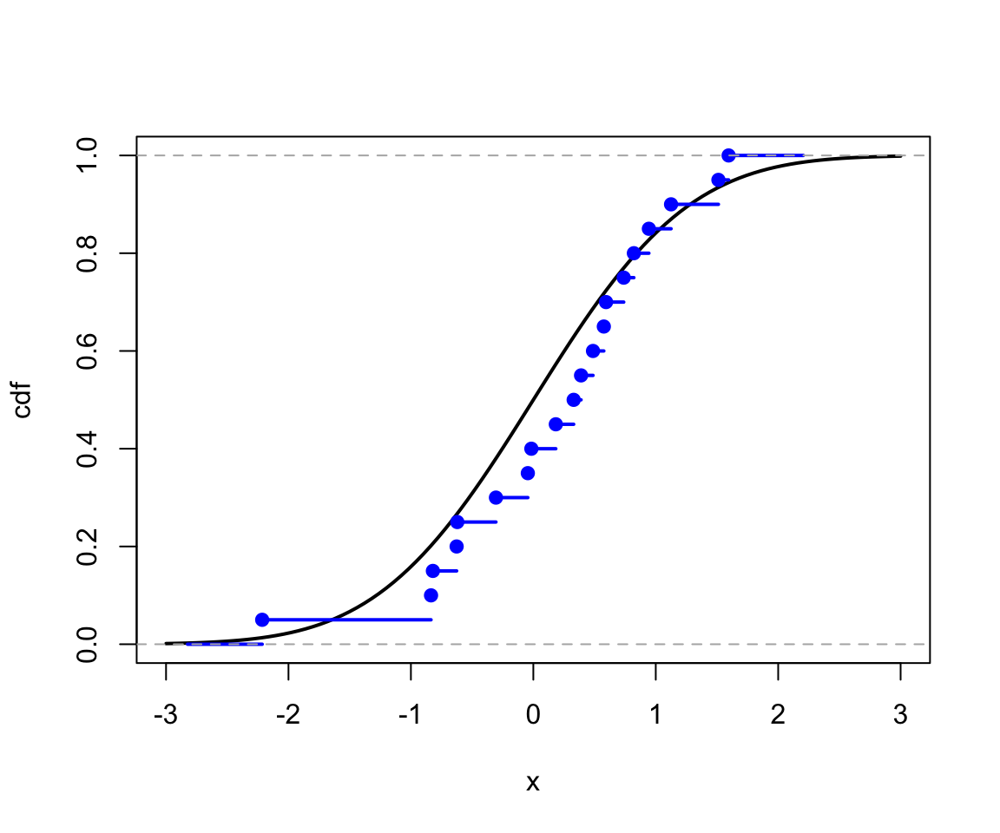
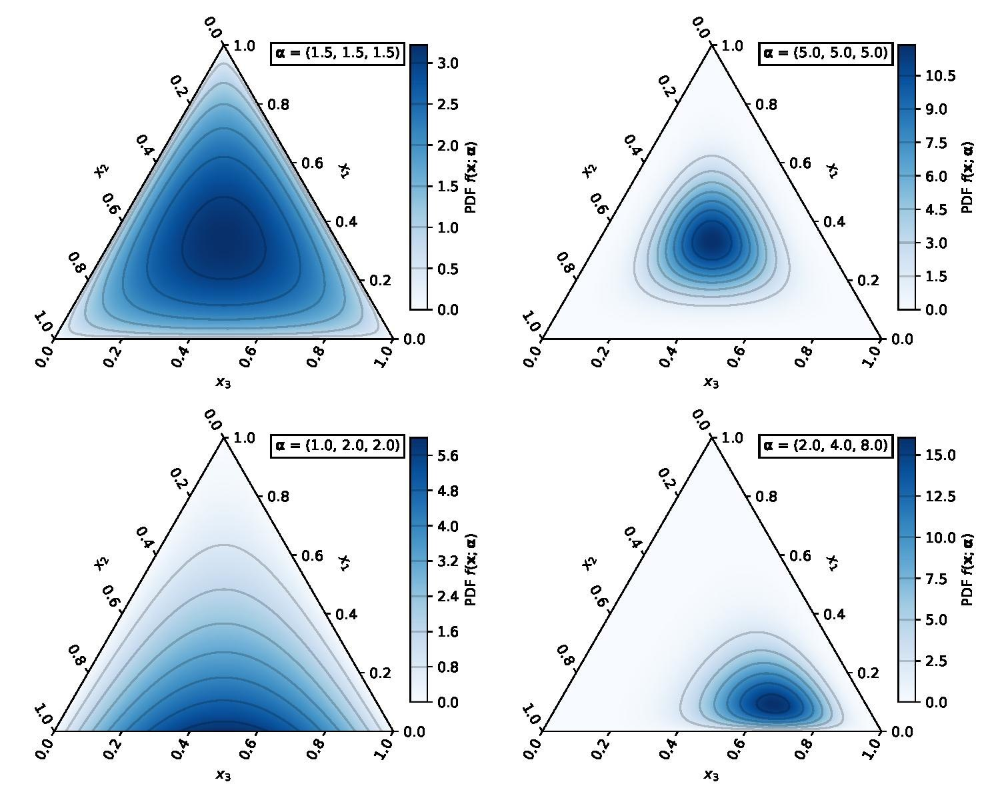
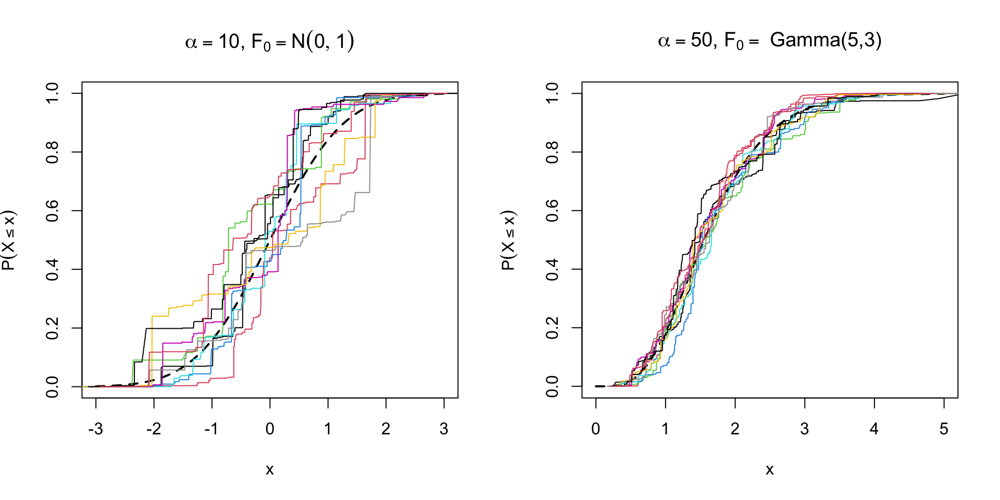
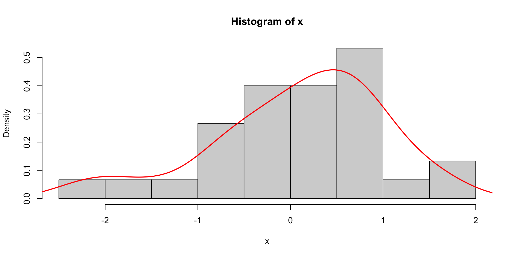

Let \(X_1, \ldots, X_n \iid F\) be a random sample from a distribution \(F\).
We want to estimate \(F\) without posing any parametric assumption.
We focus on the two cases:
\(F\) is a continuous distribution and we want to estimate its cdf
\(F\) is a continuous distribution and we want to estimate its pdf
A Bayesian approach is to view \(F\) as a random distribution and put a prior on it.
Random distribution
A random distribution function is just a random function with additional constraints:
\(\lim_{x \to -\infty} F(x) = 0\)
\(\lim_{x \to \infty} F(x) = 1\)
\(F\) is non-decreasing
\(F\) is right-continuous
Enforcing these constraints on Gaussian process is not easy.
Therefore, we need another process that can generate random distribution functions.
Empirical distribution
Based on the observations \(X_1, \ldots, X_n\), the empirical cdf (ecdf) is \[
\hat{F}_n(x) = \frac{1}{n} \sum_{i=1}^n I(X_i \leq x).
\]
The empirical cdf is always a discrete distribution on \(\{X_1, \ldots, X_n\}\).
It is the simplest nonparametric estimator of \(F\).
The Glivenko-Cantelli theorem states that \(\hat{F}_n \to F\) almost surely (in the sup norm), i.e., \(\sup_x \| \hat{F}_n(x) - F(x)\| \cas 0\).
Example
The ecdf can be easily computed in R:
set.seed(1); x <-rnorm(20)curve(pnorm(x), -3, 3, lwd =2, ylab ="cdf")lines(ecdf(x), col ="blue", lwd =2)

Dirichlet Process
An obvious problem with the ecdf is that it is discrete.
Therefore we can not directly differentiate the ecdf to get the pdf.
The most commonly used prior for random distributions is the Dirichlet process.
It is the infinite-dimensional generalization of the Dirichlet distribution, just like the Gaussian process is the infinite-dimensional generalization of the multivariate normal distribution.
Dirichlet distribution
Beta distribution \(p \sim \text{Beta}(\alpha, \beta)\): \[
f(p \mid \alpha, \beta) = \frac{\Gamma(\alpha + \beta)}{\Gamma(\alpha)\Gamma(\beta)}p^{\alpha-1}(1-p)^{\beta-1}, \quad p \in [0,1].
\]
The domain of a Dirichlet distribution is a \(k-1\) dimensional simplex \(\triangle^{k} = \{(p_1, \ldots, p_k): \sum p_i = 1, p_i \geq 0\}\).
Dirichlet distribution

Definition
A ``random distribution’’ \(F\) is said to follow a Dirichlet process, denoted by \[
F \sim \mc{DP}(\alpha, F_0),
\] if for any measurable partition \(B_1, \ldots, B_n\) of the sample space of \(F_0\), the random vector \((F(B_1), \ldots, F(B_n))\) has a Dirichlet distribution, i.e., \[
(F(B_1), \ldots, F(B_n)) \sim \text{Dir}(\alpha F_0(B_1), \ldots, \alpha F_0(B_n)).
\]
The parameter \(\alpha > 0\) is called the concentration parameter: large \(\alpha\) means \(F\) is more concentrated around \(F_0\).
The parameter \(F_0\) is called the mean distribution.
Expectation and variance
Let \(F\) be a random cdf from a Dirichlet process \(\mc{DP}(\alpha, F_0)\).
Let \(w_1=V_1\) and \(w_j=V_j \prod_{i=1}^{j-1}\left(1-V_i\right)\) for \(j=2,3, \ldots\)
Let \(F\) be the discrete distribution that puts mass \(w_j\) at \(s_j\), that is, \(F=\sum_{j=1}^{\infty} w_j \delta_{s_j}\) where \(\delta_{s_j}\) is a point mass at \(s_j\).
The distribution \(F\) is a random distribution from the Dirichlet process \(\mc{DP}(\alpha, F_0)\).
Stick-breaking Construction
DP_stick <-function(alpha =10, F0 = rnorm, n =1e3){ s <-F0(n) V <-rbeta(n, 1, alpha) w <-c(V[1], rep(0, n-1)) w[2:n] <-sapply(2:n, function(i) V[i] *prod(1- V[1:(i-1)])) s_ord <-order(s) s <- s[s_ord] cum_prob <-cumsum(w[s_ord])return(list(x = s, cdf = cum_prob))}
Stick-breaking Construction

Pólya Urn
Consider an urn containing balls of \(k\) different colors.
Initially, there are \(\alpha_i\) balls of color \(i\).
At each step, a ball is drawn from the urn and then put back together with another ball of the same color.
Repeat indefinitely.
Let \((p_1(n), \ldots, p_k(n))\) be the proportion of balls of each color after \(n\) steps.
Results:
\((p_1(n), \ldots p_k(n))\) converges to a random vector \((p_1, \ldots, p_k)\).
A sequence of random variables \(\{X_1, X_2, \ldots \}\) is a Pólya Urn sequence with parameter measure \(\alpha\) if
\(\P(X_1 \in B) = \alpha(B)/\alpha(\R)\),
for every \(n\), \[
\P(X_{n+1} \in B \mid X_1, \ldots, X_n) = \frac{\alpha(B) + \sum_{i=1}^n I(X_i \in B)}{\alpha(\R) + n}.
\]
Let \(F_n\) be the distribution function of \(X_{n+1}\) given \(X_1,\ldots, X_n\).
Then \(F_n \to F\) and \(F \sim \mc{DP}(\alpha(\R), F_0)\), \(F_0(B) = \alpha(B)/\alpha(\R)\).
Estimating a cdf
Suppose we have \(X_1, \ldots, X_n \iid F\) and we want to estimate \(F\).
A Bayesian approach is to put a prior on \(F\) and find the posterior distribution of \(F\), i.e., \[\begin{align*}
X_1, \ldots, X_n \iid F, \quad
F \sim \text{Dir}(\alpha, F_0).
\end{align*}\]
The posterior of \(F\) given \(X_1,\ldots, X_n\) is \[
F \mid X_1, \ldots, X_n \sim \text{Dir}\left(\alpha + n, \frac{\alpha}{\alpha + n}F_0 + \frac{n}{\alpha + n}\hat{F}_n\right),
\] where \(\hat{F}_n = \frac{1}{n}\sum_{i=1}^n \delta_{X_i}\) is the empirical cdf.
Hence the posterior mean is \[
\E[F \mid X_1, \ldots, X_n] = \frac{\alpha}{\alpha + n}F_0 + \frac{n}{\alpha + n}\hat{F}_n.
\]
Example
Consider \(X_1, \ldots X_n \iid F\) and \(F \sim \mc{DP}(\alpha, F_0)\) where \(\alpha = 10\) and \(F_0 = N(0,1)\).
n <-10set.seed(1)x <-rcauchy(n)alpha <-10F_bar <-function(z){ n/(alpha+n)*ecdf(x)(z) + alpha/(alpha+n)*pnorm(z)}
Smoothness would imply dependence between \(F(B_1)\) and \(F(B_2)\) for adjacent bins \(B_1\) and \(B_2\).
However, the DP actually induces negative correlation between \(F(B_1)\) and \(F(B_2)\) for any two disjoint sets \(B_1\) and \(B_2\), with no account for the distance between these sets.
The realization of a DP is almost surely discrete.
Density Estimation
Suppose we have \(X_1, \ldots, X_n \iid F\) with density \(f\) and we want to estimate \(f\).
The most common estimate is the kernel density estimate (KDE): \[
\hat{f}_n(x) = \frac{1}{n}\sum_{i=1}^n \frac{1}{h}K\left(\frac{x-X_i}{h}\right)
\] where \(K\) is a kernel function and \(h\) is a bandwidth.
For example, the Gaussian kernel is \(K(u) = \exp(-u^2/2)\).
In R, the KDE is implemented in the function density.
Example
set.seed(1); x <-rnorm(30)hist(x, freq = F, breaks =10)lines(density(x), col ="red", lwd =2)

Mixture model
A related approach is to use a mixture model: \[
\hat{f}(x) = \sum_{i=1}^k w_i h(x \mid \theta_i)
\] where \(h(x \mid \theta_i)\) are density functions and \(w_i\) are weights.
For example, the Gaussian mixture model (GMM) is \[
\hat{f}(x) = \sum_{i=1}^k w_i\phi(x \mid \mu_i, \sigma_i^2)
\] where \(\phi(x \mid \mu_i, \sigma_i^2)\) is the density of a normal distribution with mean \(\mu_i\) and variance \(\sigma_i^2\).
In fact, a GMM can approximate any density (on \(\R\)) arbitrarily well.
Infinite mixture model
We can also consider an infinite mixture model: \[
\hat{f}(x) = \sum_{i=1}^\infty w_i h(x \mid \theta_i).
\]
Dirichlet process is an example of infinite mixture models, since \(F = \sum_{i=1}^{\infty}w_i \delta_{x_i}\) from the stick-breaking construction.
However, the realization of a Dirichlet process is a mixture of Dirac distributions and therefore does not have a density.
A more general form of mixture model is \[
f(x) = \int h(x \mid \theta) dP(\theta)
\] where \(P\) is a mixing distribution and \(h\) is a given kernel.
Dirichlet process mixture model
For density estimation, the Dirichlet process is not a useful prior, since it produces discrete distributions.
Alternatively, we assume the density to be estimated is \[
f(x) = \int h(x \mid \theta) dP(\theta)
\] where \(P\) is unknown.
We assume a Dirichlet process prior on \(P\), \[\begin{align*}
X \mid P & \sim f(x) = \int h(x \mid \theta) dP(\theta)\\
P \mid \alpha, P_0 & \sim \mc{DP}(\alpha, P_0);
\end{align*}\] this is called a Dirichlet process mixture model (DPMM).
Dirichlet process mixture model
Using the stick-breaking representation, the DPMM is equivalent to \[\begin{align*}
f(x)=\sum_{i=1}^{\infty} w_i h\left(x \mid \theta_i^*\right)
\end{align*}\] where \(w_i\) is from the stick-breaking process and \(\theta_i^* \iid P_0\), \(i = 1,\ldots, \infty\).
Suppose we observe \(X_1, \ldots, X_n \iid f\) and we want to estimate \(f\) using DPMM.
We need to sample \(\theta_1^*, \theta_2^*, \ldots\) the posterior.
However, in this case, we no longer have the conjugacy due to the presence of \(h\).
Sampling from DPMM
When \(P_0\) and \(h\) are conjugate, sampling \(\theta^*_1,\theta^*_2, \ldots\) can be done using the Pólya Urn Scheme and Gibbs sampler.
For example, when \(h(x \mid \theta)\) is normal and \(\theta = (\mu, \sigma^2)\), \(P_0\) is normal-inverse-gamma.
When \(P_0\) and \(h\) are not conjugate, we can Metropolis-Hastings to sample \(\theta^*_1,\theta^*_2, \ldots\).
We will use the R package dirichletprocess for demonstration.
The function DirichletProcessGaussian creates a DPMM with
\(h\) being Gaussian
\(P_0\) being the normal-inverse-gamma distribution which is conjugate to normal.
library(dirichletprocess)its <-500# Number of iterationsfaithfulTransformed <-scale(faithful$waiting)dp <-DirichletProcessGaussian(faithfulTransformed)dp <-Fit(dp, its)plot(dp, data_method="hist")
Nonparametric models for parameters that vary by group: \[
y_{i j}=\mu_i+\epsilon_{i j}, \quad \mu_i \sim f, \quad \epsilon_{i j} \sim g
\]
Clustering Analysis
Cluster Analysis
For a DPMM, each \(X_i\) is assigned a cluster parameter \(\theta_i\), for example, \[\begin{align*}
X_i & \sim N\left(y \mid \theta_i\right), \\
\theta_i & =\left\{\boldsymbol{\mu}_i, \Sigma_i\right\} \\
\theta_i & \sim G \\
G & \sim \mc{DP}\left(\alpha, G_0\right).
\end{align*}\]
The collection of all unique \(\theta_i\)’s allows for a natural way of grouping the data and hence the Dirichlet process is an effective way of performing cluster analysis.
The cluster assignment is obtained through the Chinese Restaurant Process.